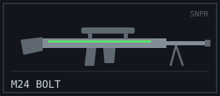
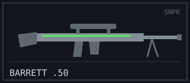
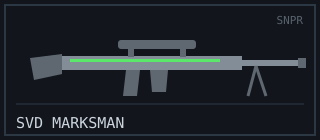

SNIPER RIFLE
Role: Long-Range One-Shot Pick
Snipers rule the long lanes. One perfectly placed shot can win a round before the enemy team has crossed the map — but a sniper who misses is a sitting duck with a slow bolt and no close-range answer. These are the highest-risk, highest- reward tools in the armory, and they demand patience, positioning, and a steady crosshair.
Arsenal Comparison
| Weapon | Damage | Fire Rate (RPM) | Magazine | Reload (s) | Range (m) | Recoil (1–10) | Price ($) |
|---|---|---|---|---|---|---|---|
| AWM “Longshot” | 115 | 40 | 5 | 3.7 | 95 | 9 | 4750 |
| M24 “Bolt” | 90 | 50 | 5 | 3.4 | 85 | 8 | 3900 |
| Barrett .50 “Wallbreaker” | 130 | 35 | 10 | 4.2 | 90 | 10 | 5000 |
| SVD “Marksman” | 78 | 120 | 10 | 3.0 | 75 | 7 | 3200 |
Weapon Files
AWM “Longshot”
Combat Stats
- Fire Mode: Bolt-action
- Ammo Type: .338 Magnum
- Wall Penetration: High
- Mobility: 78%
Description / Lore
The undisputed one-shot king. A hit almost anywhere on the body is a kill, which is exactly why it costs a fortune. Carrying the Longshot means betting your whole round economy on your aim — land the shot and you look like a genius, whiff it and you are bankrupt and cornered.
Unlock Requirement
Land 50 sniper kills — Variant “Frostbite” at 25 no-scope kills.
M24 “Bolt”

Combat Stats
- Fire Mode: Bolt-action
- Ammo Type: 7.62mm
- Wall Penetration: High
- Mobility: 80%
Description / Lore
The working sniper's rifle. It won't one-shot a full-health body like the Longshot, but any hit to the chest or above ends the fight, and it costs far less. This is where most marksmen earn their first thousand scope kills.
Unlock Requirement
Available by default — Variant “Woodland” at Account Level 18.
Barrett .50 “Wallbreaker”

Combat Stats
- Fire Mode: Semi-automatic (anti-materiel)
- Ammo Type: .50 BMG
- Wall Penetration: Extreme
- Mobility: 72%
Description / Lore
When cover stops being cover. The Wallbreaker's .50 rounds tear through walls, crates, and doors to kill whatever is hiding behind them. It is heavy, slow, and loud enough to announce your position to the entire server — but nothing on the map is truly safe from it.
Unlock Requirement
Score 30 wall-penetration kills — Variant “Demolition” at Level 35.
SVD “Marksman”

Combat Stats
- Fire Mode: Semi-automatic (DMR)
- Ammo Type: 7.62mm
- Wall Penetration: Medium
- Mobility: 85%
Description / Lore
A designated marksman rifle for players who miss the first shot and want a second one now. It trades the one-shot ceiling for a fast semi-auto trigger and forgiving handling — the friendliest way onto the sniper rack, and lethal in a double-tap.
Unlock Requirement
Reach Account Level 14 — Variant “Tracker” at 300 marksman kills.
Signature Showcase — M24 Bolt
Field footage: the bolt-action cycle that chambers each round by hand.
External Intel
- Reference: Sniper rifle (Wikipedia)
- Showcase video: How a bolt-action rifle works (YouTube)